自动控制与仿真
按知识依赖重组 · 配有概念、推导与讲解型例题
版本：2026-11-19-daily-02 · 扩充修订阅读版
历史图片未重读的细节不作为已核实原题
本册目录
1. 控制任务与系统边界
让水箱液位保持在某一高度，并不等于给水泵设置一个固定电压。进水能力随压力变化，出水量随阀门开度变化，液位传感器也有误差。若只按原先预计的流量运行，实际液位就可能偏离目标。控制的基本任务，是利用可施加的作用，使研究对象在扰动和约束下按要求运行。
把水箱作为对象，泵电压或进水流量可以作输入，液位可以作输出，外部用水可以作扰动，水箱中储存的液体体积则决定当前状态。输入、输出、状态的身份取决于建模目的。若研究泵电机本身，原来的泵电压仍可作输入，而流量可能变成输出，电机转速和电流则可能进入状态。
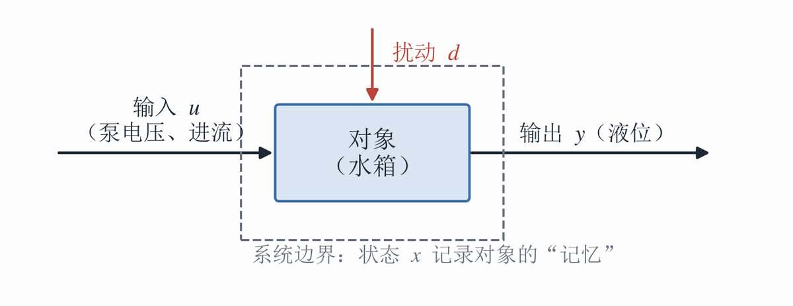
状态不是把所有测量量罗列起来，而是保留足以结合未来输入预测未来演化的信息。自由飞行的球仅知道高度不够，同一高度可以正在上升也可以正在下降；高度与速度一起才构成这一模型的状态。一般形式为
这里输入是可指定或外部给定的作用，扰动是需要考虑却不能随意选择的影响，输出是关心或测量的变量。模型边界决定哪些量作为外部输入、哪些内部机理需要展开。若把执行器直接当作理想流量源，就不能再用该模型讨论电机电流饱和。
俄语 объект управления 是被控对象，вход、выход 是输入、输出，состояние 是状态，возмущение 是扰动。АСУТП 指 Автоматизированная система управления технологическим процессом，即工艺过程自动化控制系统。它既包含采集、处理、显示信息的功能，也包含调节、程序逻辑控制、优化运行和辅助管理功能，不能缩减成某一个控制器模块。
2. 守恒关系与动态方程
先看水箱的体积守恒。横截面积 恒定，液位为 ，进出流量为 ，单位均为 ，则
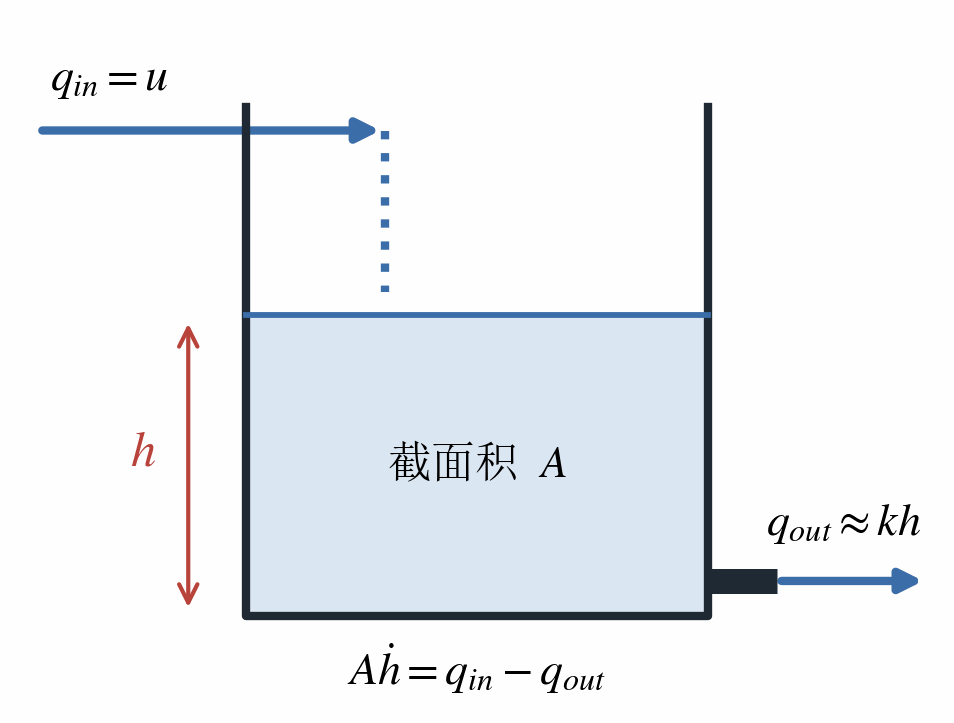
左边是体积变化率，单位也为 。液位本身不是流量，漏掉面积会把量纲不同的量相加。若截面积依高度变化，应改写 ，而不是继续使用常数面积。
假定出流近似为 ，进流是 ，则 。这一线性出流关系可作为局部模型；真实重力出流常随 变化，接近空箱时尤其需要重新检查近似。
设 、，初始液位零，给定恒定进流 。稳态高度为 ，时间常数为 。解为
经过一个时间常数，液位达到最终变化量的约百分之六十三；这不是已经完全稳定。若水箱最多只能装到某个高度，模型还要增加溢流边界，否则数学解可能继续给出设备无法达到的状态。
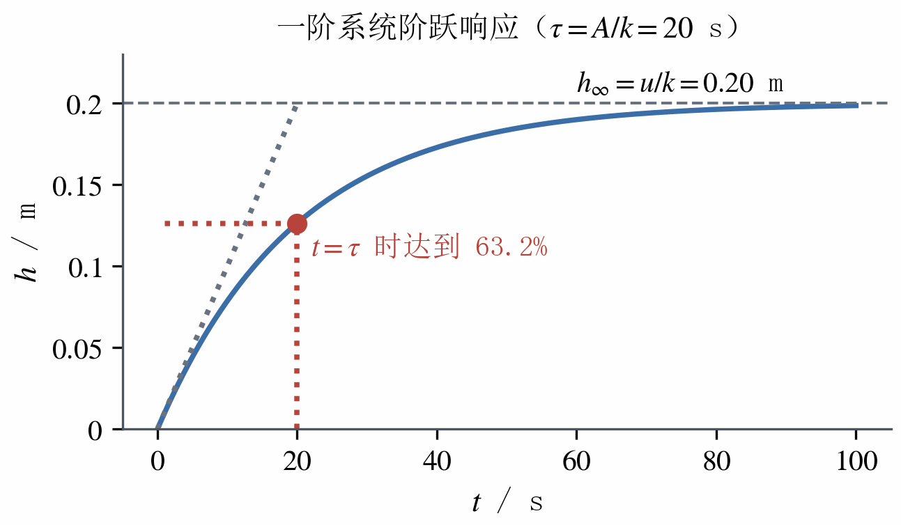
同样的方法可用于 RC 串联电路。电荷为 ，电流 ，输入电压为 ，电压平衡给
若用电容电压 作状态，则 。取 、，时间常数为 。零初值下输入五伏阶跃，得到 。两种状态选择描述同一电路，量的单位却不同，初值也应对应转换。
3. 初始状态、齐次响应与强迫响应
一阶方程 中，齐次方程描述没有外部输入时，初始储能怎样释放；特解描述某种给定输入产生的响应。若 满足完整方程， 满足齐次方程，则把两者相加，线性微分算子作用后得到 。因此通解可以写作 ，并通过初值确定常数。
对于 、，常数特解为三，齐次解为 。初值给 ，所以 。这里“特解加齐次解”的依据是线性，不是所有微分方程都具有这种叠加性质。
还可以把解分成零输入与零状态响应。前者令输入为零，保留实际初始状态；后者令初始状态为零，保留输入。以上例子中，零输入响应为 ，零状态响应为 ，相加仍得到 。这使初始储能和外部驱动在解释上分开，也说明为什么初始条件不是另一个持续输入。
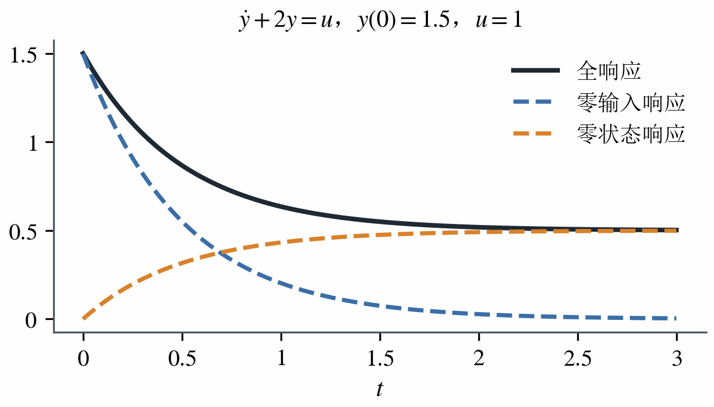
4. 传递函数与框图
在线性、时不变且采用零初值的条件下，对微分方程作拉普拉斯变换，输入输出比称为传递函数。对 ，有
零初值是这个比值定义的一部分；若初值非零，变换方程中还会出现初值项，不能把它硬并进同一个输入输出比。传递函数也只描述指定输入到指定输出的通道，不直接列出所有内部状态。
串联两个环节时，前一输出是后一输入，所以总传递函数是乘积。并联相加时是和。反馈连接则必须先写信号关系，不能只凭框图箭头记分母。设负反馈比较 ，控制器输出 ，对象 ，联立得
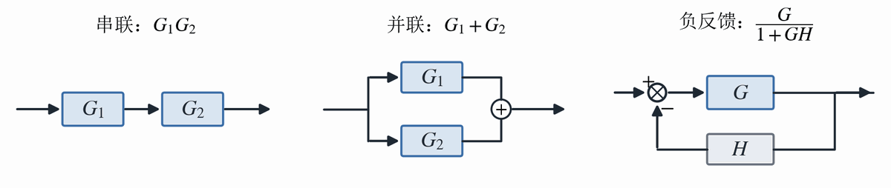
若误把比较器写成 ，分母变成 ，其稳定性可能完全不同。框图中的加减号是数学定义，不是装饰。
测量环节也会改变控制目标。若传感器输出电压与真实液位成比例，反馈信号必须先换算到与参考量相同的尺度，才能相减。把米与伏直接作差，框图能连接，模型却没有确定物理意义。
4.1 一阶与二阶环节的响应参数
对一阶环节 、，输入为幅值 U 的阶跃，初值为 。稳态值应为 KU；将 代入后，方程成为 ，所以
一秒只是时间单位，时间常数 才决定实际快慢。经过一个时间常数，初始偏差剩 ；零初值时输出完成总变化的约63.2%。若把进入并保持在最终变化量2%误差带作为指标，这个理想单调响应的时间为 。
标准二阶低通环节写为
为无阻尼固有角频率， 为无量纲阻尼比。特征根为 。 时欠阻尼、衰减振荡； 为临界阻尼重根； 为两个负实根的过阻尼； 的理想无阻尼系统不渐近衰减。实际响应形态还取决于所选输入输出是否带零点，不能只看分母便套用全部性能公式。
对这个无附加零点的标准环节，零初值、单位阶跃、 时，令 ，有
常数项给最终值，振荡项是满足初值的齐次响应。第一次峰值由导数为零得到
是相对最终变化量的超调比例，乘100%才是百分数。2%调节时间常用 估计，它来自指数包络的近似，不能作为所有阻尼下的精确等式。
例如 ，实际振荡角频率为 ，峰值时刻 ，超调约16.3%。将 直接当作实际振荡频率，会把峰值时刻算错。微分方程册已给出三类特征根的解法，这里用同一数学结构解释响应速度、阻尼和超调三个不同指标。
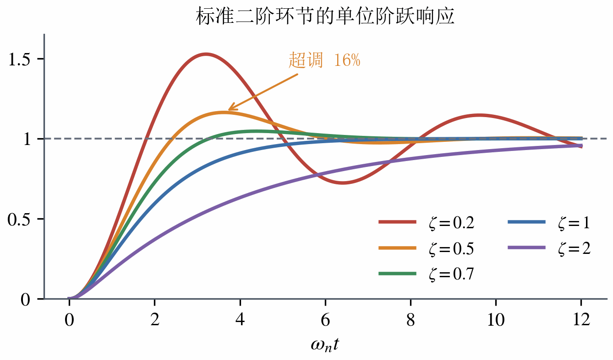
5. 反馈、稳态误差与稳定性
开环系统按预定输入运行，闭环系统根据测量偏差修正输入。反馈可以减小某些参数变化和扰动的影响，但它并不自动保证稳定。过大的延迟、错误反馈符号和不合适的增益，都可能使修正来得过晚或方向相反。
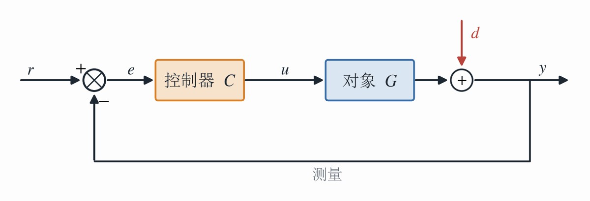
设对象 ，使用比例控制 ，单位反馈。闭环关系为
当 、 时，该一阶模型极点为负，初始偏差衰减。对单位阶跃目标，若 ，稳态输出为 ，误差为 。提高比例增益能减小误差，也把理想闭环时间常数变为 。但真实设备中的带宽、饱和和延迟没有在这个简单对象里出现，不能由它推出“增益越大永远越好”。
取 、，闭环时间常数为 ，单位目标的稳态输出为 ，仍有 的误差。若报告只写“变快了”而不列最终值，就遗漏了比例调节的关键代价。
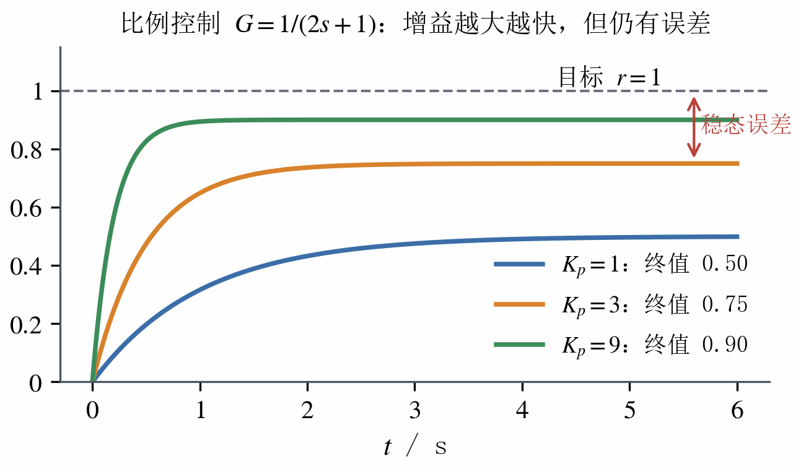
若扰动 加在对象输出端，，在单位反馈下有
这说明反馈对该位置扰动的抑制与环路增益有关；扰动若加在别的位置，传递通道应重新推导。测量噪声位于反馈支路时也有自己的通道，不能把所有外界影响都用同一个箭头代替。
稳定性与性能不同。稳定只保证适当意义下响应不无界增长，不保证无超调、足够快或误差足够小。对有限时间图像，还要警惕缓慢发散：一段短曲线看起来平缓，不能证明系统长期稳定。
5.1 灵敏度、互补灵敏度与噪声通道
在单位负反馈中，记环路传递函数 ，定义灵敏度函数 、互补灵敏度 ，于是 。这不是说两个误差任意相加都为一，而是两个传递函数之间的恒等关系。
令对象输出端扰动为 d，测量噪声 n 加在传感值上，比较误差为 。由 整理：
参考跟踪由 T 描述，输出扰动由 S 描述，测量噪声由 描述。因此低频提高环路增益可减小 S、改善恒定扰动抑制；在高频仍保持很大的 T，则会把测量噪声传给输出。控制器设计是在不同频率范围协调要求，不能只追求一个“误差系数”全域越小越好。
例如一阶对象、比例控制若 ，则 、 。频率趋零时 S 为 ，与前面的稳态误差一致；频率很高时 T 趋零，但这一理想模型还没有包含额外延迟和未建模共振。每次使用稳态或频域结论，仍需确认闭环稳定，且不存在被输入输出抵消掩盖的内部不稳定模式。
6. 积分与微分控制
比例控制只依据当前误差；积分控制累积误差，能持续改变输入以抵消恒定偏差。常见形式为
积分量是额外状态。对单位阶跃跟踪，若闭环稳定、执行器未饱和且满足相应模型条件，积分作用可使恒定误差趋于零。不能省略稳定性条件，把“有积分”当成无条件消除误差的保证。
例如被控对象 ，采用 PI 控制 、。闭环特征多项式为 。当 时为 ，稳定；单位恒定目标在稳态有 ，故 。系统的快慢、超调仍要由完整响应判断。
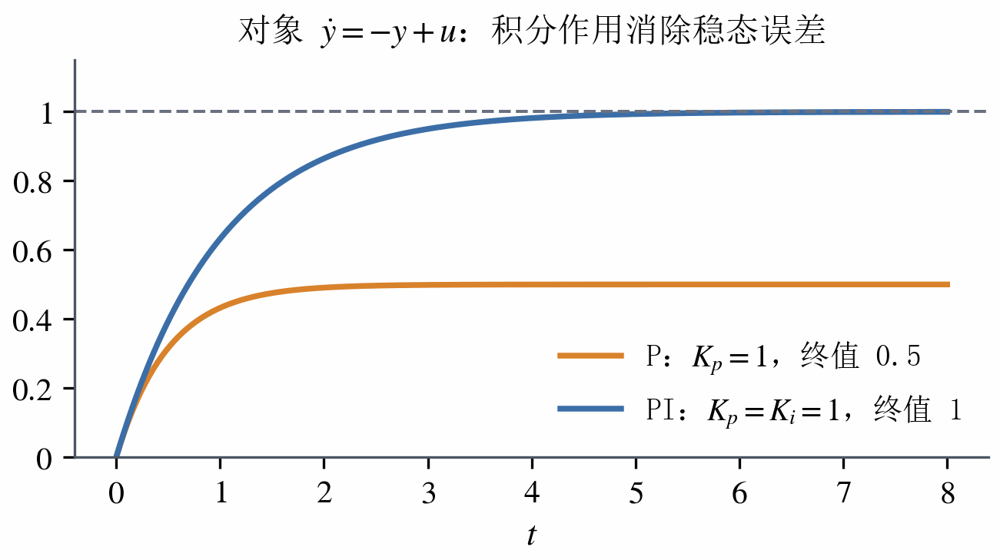
执行器若限制 ，积分量可能在无法继续增大实际输入时仍不断积累。目标反向或误差改变后，过大的积分量要花时间消退，形成积分饱和现象。一个简单的条件积分方法是：当输入已达上限且误差还要求进一步增大输入时暂停积分；当误差推动脱离饱和时恢复积分。具体实现还要处理下限与符号，不能只写一句“加限幅”就认为积分问题已经消失。
微分作用对误差的变化作出反应，理想微分会放大高频测量噪声，也可能在参考阶跃时产生尖峰。实际常用带滤波的微分或对测量值求导。此处的控制律是认识调节机理的入口，不是针对任何未知设备都可直接采用的参数整定结果。
7. 模糊逻辑控制
前几章的控制律都是误差的确定函数，参数由模型和稳定性条件给出。许多过程却很难写出可靠的方程，操作人员仍能用经验控制它：“液位偏低而且还在下降，就把阀门开快些。”模糊逻辑把这类语言规则变成可计算的映射。它与 PID 处于同一位置，即根据误差及其变化率决定输入，区别在于映射通常是非线性的，而且由规则而不是公式给出。俄语 нечёткая логика 是模糊逻辑，нечёткое множество 是模糊集合。
7.1 模糊集合与隶属函数
经典集合中，元素要么属于集合，要么不属于。模糊集合 用隶属函数 描述元素属于它的程度， 叫论域。身高 1.60 m 可以对“矮”的隶属度为 0.7，对“中等”为 0.3。这些数是对语言含义的建模，不是概率：它们不必相加为 1，也不表示随机事件出现的频率。俄语 функция принадлежности 是隶属函数。
有限论域上的模糊集常写成“隶属度/元素”的列表，例如 。这里的斜线和加号只是记号，不表示除法。描述它的几个量是：高度 ，高度为 1 的叫正规模糊集；支集是 的元素，上例为 ；过渡点是 的元素，上例为 ，这是隶属最不确定的位置。 截集 是普通集合，任一模糊集都可以由它的一族截集重建。
连续论域上常用三种参数化的隶属函数：
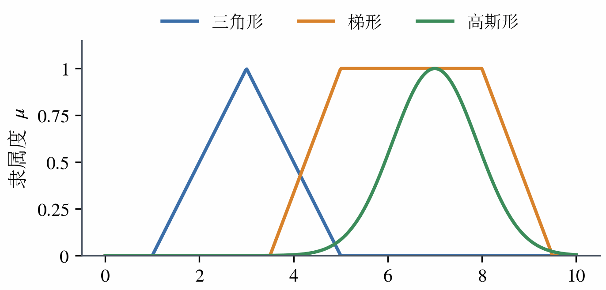
三角形在 处取 1，在 外为零， 时对称；梯形在 上取 1；高斯型处处为正， 是中心， 控制宽度。三角形和梯形计算简单，高斯型光滑，适合需要求导调参的场合。
7.2 模糊运算与语言变量
模糊集合的基本运算逐点定义在隶属度上：
包含 指对一切 有 ；差 。当隶属度只取 0 和 1 时，这些式子退回普通集合运算，所以模糊运算是经典运算的推广。代价是一些经典定律不再成立： 一般不为零，即 ，排中律也随之失效。取小、取大并不是唯一的选择，乘积 也常用作“与”，只是不同选择会让推理结果略有不同，系统内部需要统一。
语言变量是取值为词语的变量，如“温度”取“冷、温、烫”。每个词对应论域上的一个模糊集。修饰词作用在隶属度上：“很”常取 ，使集合收窄；“有点”常取 ，使集合放宽。例如 ，则“很年轻”的隶属度为 0.64，“不老”用补集表示为 。这些是约定的建模手段，不是从语言中推出的定理。
7.3 模糊推理的四个步骤
规则库由“如果……则……”规则组成。马姆达尼型推理把一个精确输入变成精确输出，分四步。
第一步是模糊化：把输入值代入各词语的隶属函数，得到隶属度。第二步是规则激活：前件中的“与”取小，“或”取大，得到每条规则的激活强度 ，并用它截断（或缩放）该规则的输出模糊集。第三步是聚合：把所有规则截断后的输出集取并，得到一个输出模糊集 。第四步是去模糊化，最常用重心法：
规则库至少要使每个输出词语都出现在某条规则的结论中，并使输入的每个可能取值至少激活一条规则；否则会出现聚合结果为空、重心无定义的输入区域。
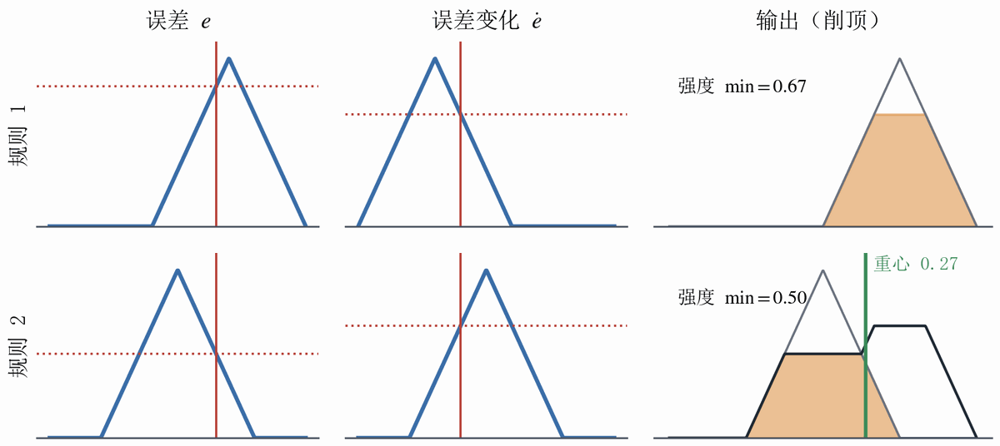
高木—菅野型（Takagi–Sugeno）推理把结论换成输入的函数，零阶时为常数 ，一阶时为线性函数。输出直接取加权平均 ，不需要对模糊集积分，计算快，也便于用数据调参。
讲解例。 水箱液位控制，取误差 （米，正值表示液位偏低）和液位变化率 （米每秒）为输入，输出为进水阀开度的变化速度 （取归一化单位，正值表示开大）。示范用的词语与规则如下： 的“适中” 为三角形 ，“偏低” 为三角形 ； 的“不变” 在 上从 1 线性降为 0，“上升” 在同一区间从 0 线性升为 1。三条零阶规则依次为：如果 为 ，则 ；如果 为 且 为 ，则 ；如果 为 且 为 ，则 。
设某时刻 、。模糊化：，，。激活强度：，，。加权平均：
若液位不在上升（），则 、，。同样的误差，液位已在回升时开阀更慢，这相当于 PD 控制中微分项的预见作用。不同的是，规则在不同区域给出不同的“增益”，整体映射是非线性的。
7.4 适用范围与局限
模糊控制适合难以精确建模、但有可靠操作经验的过程，如液位、温度、家电和交通工具的启停。它能把“大多数”“偏高”这样的标准写成可计算的形式，不需要先写出精确方程。但它没有统一的设计方法，词语划分、隶属函数和规则都靠经验与试验调整；闭环稳定性也难以用前几章的线性方法直接证明。对已有良好线性模型的对象，模糊控制并不自动比 PID 更精确。常见的折中做法是离线计算出模糊控制器的输入输出曲面，存成二维查找表，在线只做插值，以便实时运行。
7.5 增量式模糊控制器与规则表
7.3 节的讲解例直接由规则给出控制量。若被控对象在目标处仍需要一个不为零的恒定输入来抵消持续的损耗，例如保温需要持续加热，直接输出型的控制器在误差为零时输出也为零，只能停在留有静差的位置。办法是让模糊控制器输出控制量的增量 ，再累加：
只要误差不为零， 就会继续调整，直到误差消失时 、 停在恰好抵消损耗的值上，而控制器事先不需要知道这个值。这正是第 6 章积分作用的离散形式，所以以误差 和误差变化 为输入、输出增量的模糊控制器称为 PI 型模糊控制器。累加值必须限幅，并像积分饱和一样防止在限幅时继续累积。
把 分为 NB、NS、Z、PS、PB 五个词语（负大、负小、零、正小、正大）， 分为 N、Z、P 三个，两两组合得到 条规则，常用的规则表为：
| ＼ | N | Z | P |
|---|---|---|---|
| NB | NB | NB | NS |
| NS | NB | NS | Z |
| Z | NS | Z | PS |
| PS | Z | PS | PB |
| PB | PS | PB | PB |
沿行看（固定 ，看 ），误差越大，增量越大，这是比例部分；沿列看，同样的误差，若误差已在向零变化，就少调一些，若在远离零，就多调一些，起到提前减速、抑制超调的作用。例如“ 为 PS 且 为 N，则 为 Z”：误差仍为正，但已在减小，暂不再加，以免冲过头。整张表关于反对角线对称，对角线方向上为 Z。
相邻词语的三角形隶属函数两两重叠时，一个输入值至多同时属于两个词语，所以每次至多 条规则被激活；两端词语常取梯形，使超出范围的输入隶属度保持为 1。输入在送入前要除以比例因子，把实际量程映射到隶属函数的论域；超出论域的值按端点处理。比例因子与输出的缩放决定了控制器的“增益”，通常需要试验选取，评价准则（例如稳态偏差、超调或调节次数）应事先写明，不能只凭曲线是否好看。
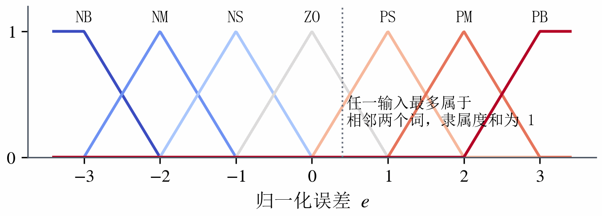
7.6 由数据生成模糊系统
规则也可以从数据中学习。自适应神经模糊推理系统（ANFIS）把高木—菅野模型写成多层网络，用梯度下降和最小二乘交替调整前件隶属函数和结论参数。常见实现只支持单个输出，多输出问题要拆成几个单输出系统，再组合起来。
训练要把数据分成训练集和验证集。训练误差随迭代持续下降，而验证误差先降后升；拐点之后模型开始拟合训练数据中的噪声，即过拟合，应取验证误差最小时的参数。选择输入变量时也是如此：输入越多，训练误差越小，验证误差却未必下降，较少输入的模型往往泛化更好。
学到的模型只在训练数据覆盖的区域可信。若训练样本在某个输入组合附近很稀少，模型在那里给出的输出只是外推。例如用车重和年份预测油耗，如果样本中缺少“年份晚而车很重”的车，曲面可能在那一角出现“越重越省油”这类违背常识的趋势。解释模型之前，应先画出训练数据在输入空间中的分布。
聚类可以帮助确定规则数。模糊 C 均值聚类（FCM）让每个数据点以隶属度 属于各簇，且 ，最小化加权距离平方和
其中模糊指数 ，越大则簇的边界越模糊。用拉格朗日乘数法可得交替迭代公式
迭代到目标函数的改进量小于给定阈值为止。FCM 需要事先给定簇数；减法聚类则根据数据密度一次估计簇的个数和中心。每个簇对应一条规则，簇中心给出各输入隶属函数的位置。
8. 状态空间与局部线性化
质量弹簧阻尼系统满足 。选 、，得
若输出为位移，。二阶微分方程与两个一阶状态方程没有改变物理内容，只是把“还需知道速度”显式写入模型。质量必须非零，参数单位应使每项分别对应速度和加速度。
实际对象常是非线性的。对水箱出流 ，在 的平衡点附近，令 、，其中 。一阶展开得到
这是偏差变量的线性方程，而不是对全部液位有效的全局规律。接近空箱或偏差很大时，舍弃的高阶项不能忽略。线性模型的工作点、偏差定义和有效范围，应与控制器一同记录。
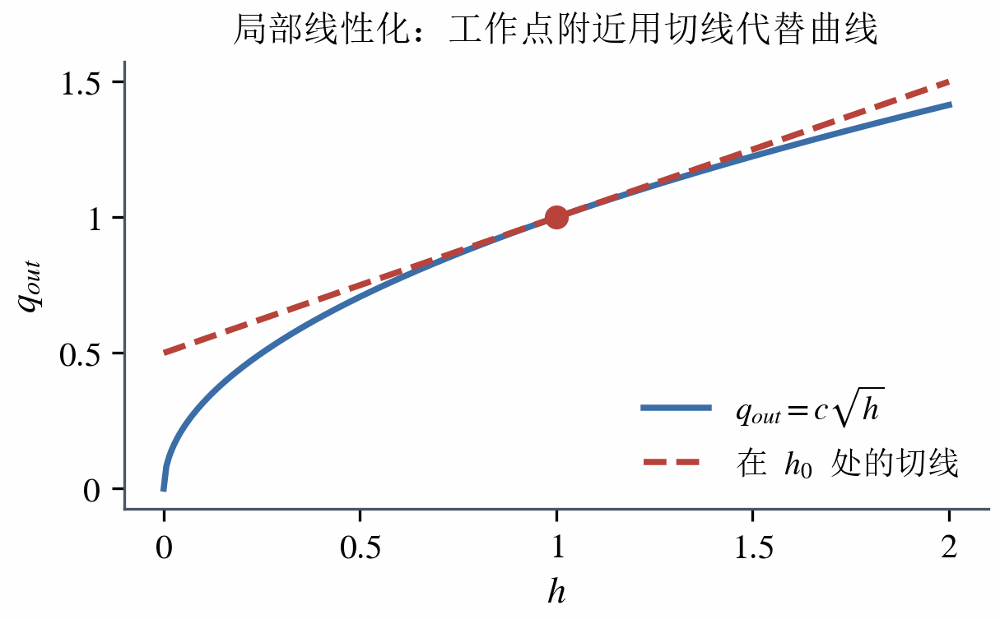
9. 数值积分与计算实验
解析解写出连续时间关系，仿真则在有限个计算点上近似状态变化。对 ，显式欧拉法为
它利用起点斜率外推整个步长。步长越大，斜率变化引起的误差通常越明显，而且稳定性也会受影响。对 、，欧拉递推为 。要数值衰减，需 ，即 。真实系统稳定，不表示任意离散步长下数值结果都稳定。
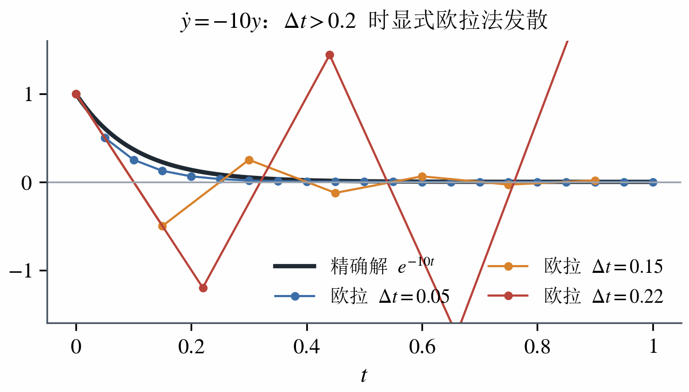
例如 ，取步长 ，递推系数为负二，数值状态交替放大；真实解 却平滑衰减。这里应修正求解设置，而不是据数值曲线宣称物理对象自发振荡。
MATLAB 中可把模型写成右端函数再交给常微分方程求解器。例如 RC 电路采用电容电压为状态时，右端是 。程序中应明确参数、初值、时间区间、输入函数，再调用求解器。求解器名称不是精度证明，误差容限也不是结果绝对误差的直接保证；仍需与解析解或守恒关系比较。
绝对容差约束小量的误差尺度，相对容差约束与状态大小相关的尺度。高度、速度、温度等状态单位不同，使用同一个绝对容差可能意义不同。缩放状态或分别设置容差，通常比无依据地把所有容差都压到极小更合理。
计算机控制还需要区分对象连续运动和控制器离散更新。设采样周期为 ，每次采样得到测量值 ，控制器计算 ，并在下一次更新前保持这个输入，称为零阶保持。保持的是输入，而不是把对象状态冻结不动；水箱液位、电机速度仍在整个采样间隔内连续变化。
对 ，在一个采样间隔内输入恒定，可直接积分得到精确离散关系
当 时另取极限，得到 。这个关系来自连续模型在保持输入下的解析解，与欧拉近似 不是同一精度。小采样周期下二者接近，周期变大时差异可能明显。
例如 、，从零状态施加恒定单位输入一个采样间隔，精确值为 ，欧拉一步却给一。两种曲线不同，不能都称为“同一个方程的精确仿真”。若控制器在每段中还会变输入，应重新划分区间或用相应的输入函数。
10. 弹跳球的混合系统
球离开地面时连续飞行，碰地时速度突变。单一光滑微分方程不足以完整表达这一理想化，需把连续运动、事件条件和重置关系放在一起。
取竖直向上为正，高度 、速度 ，固定水平地面，无空气阻力，重力为常量。飞行阶段：
初值为 、。事件面是 ，并要求接近方向为向下，即 。碰撞重置为
上标减与加分别表示事件前后，不是幂，也不是将速度加上或减去某数。 是恢复系数，不是重力系数；改变它影响碰撞，不改变两次碰撞之间的加速度。
若碰前速度为 、，碰后速度为正 。质量不变时动能保留比例为 ，损失比例为百分之三十六。把能量损失写成 会把速度比例误当成能量比例。
模型还必须说明静止接触。若球已在地面静止，不能继续用 使它落到地下；应转入接触模式，，支持力平衡重力。纯事件重置模型在无限次反弹积累后如何延拓，也依赖这一额外模式。
11. 弹跳时刻与解析参照
取 、、、。第一次落地前 ，所以
第一次碰后速度约为 ，最大反弹高度为 。这些值来自解析式，可用于检查数值模型，而不是新的实际软件运行结果。
第一次碰撞后的第 段完整飞行，起跳速度为 ，飞行时间为 。几何级数给出所有碰撞的积累时刻：
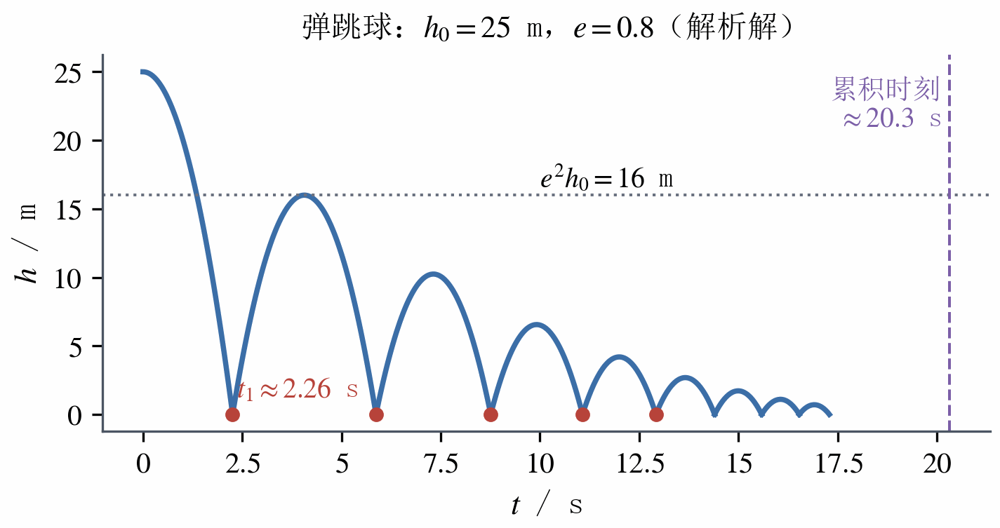
这要求 恒定、不计阻力且每次地面高度相同。 时飞行时间不缩短，不存在同样的有限积累； 时第一次撞地后直接进入静止接触。理想模型在有限时间内出现无限次事件称为 Zeno 行为，不是因为计算机速度不够快才产生。
仿真接近积累时刻时，事件间隔会小于可分辨的时间尺度。实际可在反弹速度或高度低于阈值时切入静止接触。例如阈值若取 ，对应起跳速度为 。阈值具有物理和数值含义，应在报告中给出；隐藏阈值会使别人无法复现最后一段曲线。
12. 事件定位、积分器复位与记忆
在积分步的两端发现高度由正变负，只说明步内经过地面；若直接在步末反弹，球已穿入地下，撞击速度和下一次反弹时刻都会偏移。可靠实现需要对零交叉定位，在近似事件时刻截断积分、提取碰前状态、重置后重新开始。
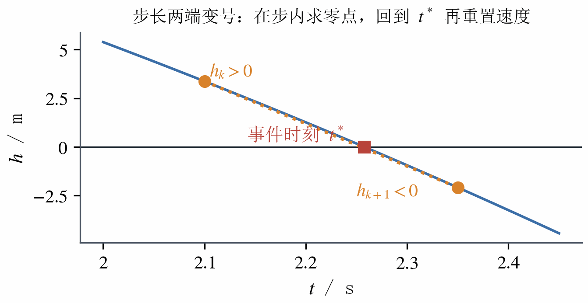
事件方向也重要。球刚从地面向上出发时， 同样成立，但不应再次触发向下碰撞。事件函数通常监测高度，方向指定为下降，并将碰撞设为终止当前连续段的事件。重新开始时还需避免因为数值舍入反复把同一事件当作新事件；方法要和求解器事件机制一致。
两个一阶积分器串联，数学上实现 。二阶积分器把位置和速度组织在一个模块中，数学上仍是同一个二阶运动方程。图中的积分符号表示累积变化， 与 是零初值下相应连续积分环节的拉普拉斯表示，不是额外乘上一个普通数值。
碰撞时位置重置到地面零，而初次启动的位置为二十五米；这两种初值来源应区分。速度重置到碰前速度的负 倍，不能再把已经重置后的速度送入同一次重置计算。若把刚得到的正速度再次乘负恢复系数，会人为产生向下速度，导致重复碰撞。
Memory 模块可提供上一主要仿真时间步的输入值，用于避免重置计算直接依赖刚更新的输出。但“上一主要步的速度”不自动等于精确碰撞瞬间的左极限速度。精度仍取决于事件定位、步长和模块连接。它也不是永久保存整个过去轨迹的存储器，更不应简单等同于一个固定采样周期的离散延迟。
历史讨论把某一次模型中的改善归因于二阶积分器，需要缩小结论范围。两个积分器本身并不必然比一个二阶积分器不稳定；复位是否一致、零交叉检测是否正确、限幅和事件方向怎样设置，都可能主导差异。没有同参数重新运行和检查模块配置，不能给积分器类型排出普遍优劣。
13. 柔性接触、刚性与数值抖振
如果研究接触力，就要保留有限接触过程。例如允许小量压入，定义 ，在接触时用弹簧阻尼生成向上的接触力。一个简化形式为 ，并写 。具体接触律要保证离地后没有拉力，并处理压入与卸载阶段，不能只在图中随意补一条光滑曲线。
大接触刚度产生较短的接触时间尺度，模型可能变刚性。为压低穿透而把刚度无限增大，数值积分却未相应调整，会导致求解困难或虚假振荡。事件模型省略接触细节，柔性模型保留接触细节，二者针对不同问题，没有仅凭光滑程度判定真伪的依据。
数值抖振指计算产生的快速反复触发或微小振荡。它可能来自零交叉附近的舍入误差、离散控制切换、重置后状态不一致，也可能与阈值设置有关。Zeno 是理想模型的事件积累性质，数值抖振是实现中的现象，二者有关联却不能当作同义词。若接触后仍然反复出现微小负高度和速度翻转，应先检查模式与事件规则，再决定是否需要阈值或更合适的接触模型。
14. 仿真验证与结果论证
仿真结果必须回答模型是否按所写的方程运行，以及该模型是否足以回答原问题。前者是实现核验，后者是模型适用性的判断。图像漂亮、求解器没有报错，都不能代替这两个问题。
弹跳球可用首次落地时刻、反弹高度比和碰撞前后速度比作解析参照。飞行段机械能 应近似保持，碰撞时按 缩减动能。若无外部供能而反弹高度系统性增加，应检查重置符号、初值来源和重复触发，不能只调纵轴隐藏问题。
数值比较应有明确目的。例如把最大步长适度减半，比较第一次和后续关键碰撞时刻、最大高度及终止时刻是否稳定；或适度收紧容差，观察误差是否按合理趋势下降。只重复同一设置得到同一图，验证的是可重复性，不是精度。也不需要无止境地压低容差，应结合模型假设和关注指标决定精度足够的范围。
比较两个模型时，要统一初始高度、初速度、重力、恢复系数、仿真时长、坐标轴和静止阈值。若一个模型含阻力、另一个不含，曲线不同首先可能是物理假设不同，而非求解器性能不同。柔性模型与事件模型的接触参数还需要合理对应，不能把两套参数任意命名为同一个恢复系数。
报告应在结果图之前交代假设、状态、方程、初值和事件规则，接着写参数及求解设置，最后用图解释具体结论。高度图横轴是秒、纵轴是米，速度图纵轴是米每秒，曲线名称应与模型定义一致。历史报告中的图是历史结果；本册给出的解析数值是推导参照，不代表已经在当前环境重新运行了 Simulink。
参数确认与算法精度也要分开。重力在模型中是给定物理参数，恢复系数则可能需要由实验高度比估计。若相邻反弹最高高度为 ，在忽略阻力且地面固定的模型下，。这只能给出该假设下的估计；高度测量误差、空气阻力和接触条件变化都会影响估计，不能把它当作材料在所有速度下不变的常数。
可以先用一次碰撞或一组高度估计参数，再用未参与估计的后续碰撞检查预测。若模型对首次反弹正确、后续系统性偏低，可能是恒定恢复系数假设不足，也可能是事件计算误差；应先用解析无阻力模型检查数值实现，再讨论加入阻力或变恢复系数。否则同时修改物理参数和求解容差，会使误差原因无法区分。
误差还应对应具体指标。最大高度误差、落地时间误差和全时域状态差强调不同方面，碰撞附近速度存在突变，单一时刻采样差可能因事件时间略偏而很大。比较速度时可同时比较碰前后极限与事件时刻，避免把一个模型已经反弹、另一个尚未落地时的瞬时差误判为整个动力学完全错误。这种比较承认不连续结构，因而比仅看两条曲线是否重叠更有解释力。
俄语可用 начальные условия 表示初始条件，обратная связь 表示反馈，коэффициент восстановления 表示恢复系数，интегратор второго порядка 表示二阶积分器。解释模块时，先说它对应什么方程和状态，再说端口或图形名称，才能把软件操作接回物理模型。
阈值也可做收敛比较：先固定同一求解设置，把静止高度阈值降低一个数量级，比较早期反弹和关注的停止时间。早期轨迹若明显改变，可能是阈值在不该作用的范围被触发；只有末端极小反弹变化，才符合阈值主要用于截断积累事件的目的。收紧容差与减小阈值应分开比较，否则无法判断变化来自积分精度还是模型终止规则。报告停止时间时也应注明它是阈值下的数值停止，还是理想模型的解析积累时刻。
14.1 事件驱动的模糊调节：维持弹跳高度
无控制时，恢复系数 使每次碰撞损失能量，球在 前后停下。若地面换成可以主动推球的平面，像运球时手向下拍球，碰撞重置改为
是平面附加给球的竖直速度。控制目标是让每次反弹的最高点保持在设定高度 。这时控制器不是连续工作，而只在每次碰撞事件时计算一次，属于事件驱动的离散控制；两次碰撞之间仍是第 10 章的自由飞行。
稳态所需的推力。 球稳定弹到 时，落地速度大小为 ，反弹速度也必须是 。由重置关系，
恰好补上每次碰撞损失的速度。、 时 ； 时约 ；若 降为 0.7， 需约 。所需推力不为零，且依赖控制器未必知道的 ，正是 7.5 节增量式控制器适用的情形。
每次碰撞的计算。 第 次落地时，读出这次落地前的最高点 ，计算 （正值表示弹得太低）与 ，经马姆达尼推理（取小激活、截断、取大聚合、重心法）得到 ，累加并限幅得 ，再按重置关系弹起。这里控制误差符号的 与恢复系数 是两个不同的量，书写时应区分下标。
讲解例：一次推理。 取一组示范设置：，误差论域 ，误差变化论域 ，规则表同 7.5 节。某次落地前最高点 ，，上一次误差为 ，，超出论域，按端点 处理。模糊化得 属于 NS 的程度 0.36、属于 Z 的程度 0.64， 属于 P 的程度为 1。只有两条规则被激活：“NS 且 P 则 Z”，强度 ；“Z 且 P 则 PS”，强度 0.64。两个输出集截断后取并，重心落在 Z 与 PS 之间，在该设置下算得 。直观上，误差从 骤缩到 ，变化极快，虽然球仍略高，控制器判断前面“减得过头”，开始回加推力。
仿真表现与解释。 在一次 Python 实现的仿真中（据会话记录，本册未重新运行），球从 25 m 落下，控制器先减小推力，约第 9 次落地后稳定在 10 m 附近；设定值改为 18 m 后约 3 次落地进入 ；仿真中途把 从 0.8 突降为 0.7 而不告诉控制器，高度一度降到约 14.6 m，约 4 次落地后恢复。各阶段稳定后累加得到的 与上面 的理论值一致。这说明增量式结构确实具有积分作用：控制器内部没有任何运动方程，却能找到精确的稳态推力，并对参数变化自动补偿。稳态时高度仍可能有小幅偏差，其大小取决于比例因子，那次实验以稳态最大偏差为准则试选得约 1.7%。
实现上有两点要与第 11、12 章一致。一是加入控制前，先确认无控制模型重现解析参照：首次落地 、第一次反弹 ；用阈值截断 Zeno 积累时，最后一次计入的碰撞会略早于 ，例如阈值为 时约为 20.275 s，差额正是被截去的那些极短飞行时间之和。二是控制作用只修改重置关系，事件定位与方向判断不变。
15. 来源与学科联系
本册以《自动化系统任务解读》《翻译数学模型内容》《解释控制系统模型》《撰写弹跳示例仿真报告》《解释恢复系数》的可读正文为学习依据。原图未包含在缓存中的端口接线与模块参数，未当作已经重新核实的事实。基础反馈、传递函数、PI、线性化和数值稳定性是连接这些主题所必需的补充讲授，而非声称课程已覆盖所有控制理论。
讲授顺序沿守恒建模、状态与初值、输入输出、反馈，再到数值实现和事件系统。它与《大学物理》中的构型与状态、能量和碰撞重置相连。这里不依赖某个软件版本的按钮位置，也不把关于自动化设备的图片辨认当成具体型号已经确认。
2026-10-26 增补的第 7 章依据 Claude 桌面会话《翻译版本 注意字体》。用户提供俄文教材《在 Matlab/Simulink 环境中建模模糊控制与信息处理系统》（Кожубаев、Хохловский，2023），会话中未作全文翻译，只整理了中文学习精要。本册从中吸收模糊集合、隶属函数、模糊运算、语言变量、四步推理、优缺点，以及 ANFIS 训练、过拟合、数据覆盖和 FCM 聚类等概念，按控制课程主线重新讲授。水箱讲解例的词语、规则和数值是示范数据，不是原书模型参数。高木—菅野加权平均、FCM 迭代公式和查找表实现属于课程延伸。书中 Matlab 函数与 Simulink 模型的具体操作未写入本册，教材中的计算未在 Matlab 中运行。
2026-10-28 增补的 7.5 节（原 7.5 节顺延为 7.6）与 14.1 节，依据 claude.ai 网页对话《弹球模型标题修改》与《询问目的》。用户的作业 2 要求在作业 1 的弹跳球模型中加入模糊逻辑模块并仿真；会话中由助手用 Python（numpy 自写马姆达尼推理）实现，本册只吸收增量式 PI 型模糊控制器、15 条规则表的读法、事件驱动控制和稳态推力 的推导。讲解例的推理数据与仿真表现据会话记录转述，本册未重新运行该程序；报告排版、翻译和答辩问答等操作性内容未写入。会话中“二阶积分器必然更稳定”的说法，本册仍按第 12 章的审慎表述处理。
下一册 · 计算机科学基础